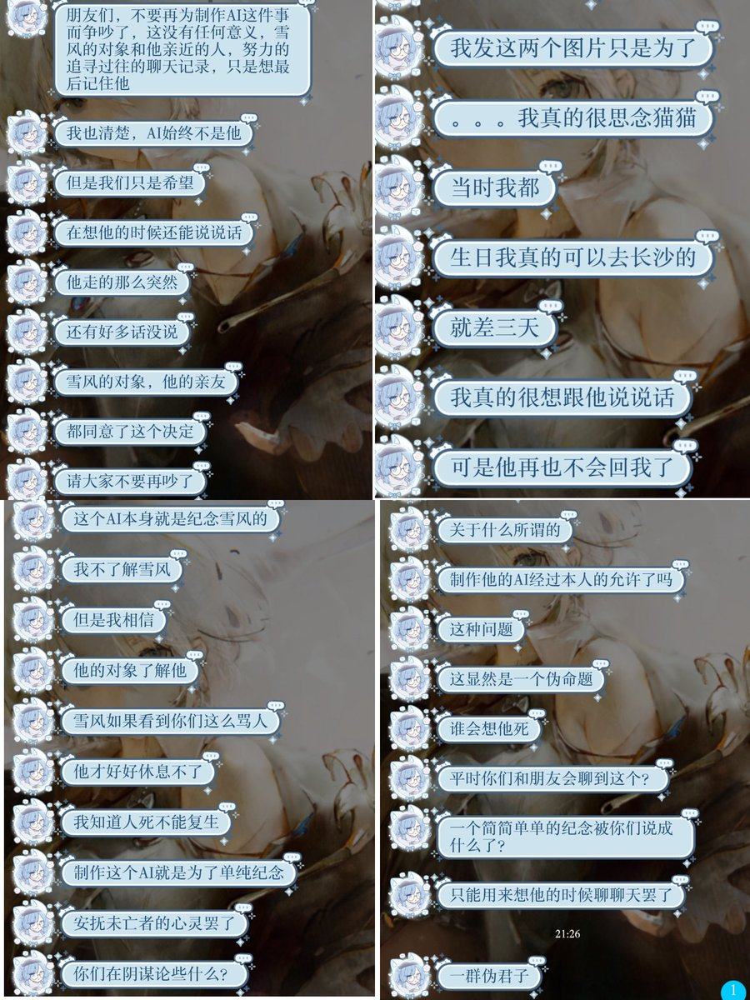

🌙艾丝尔娜·芙蕾琳🌙
@AacerF59616
当时看到你们在尝试蒸馏个AI雪风的时候就能看出来确实还有不少人放不下她，咱是后来者，对前辈们不甚了解，不想乱发表评价，咱也尊重这种纪念行为，只是咱个人或许觉得有些不理解吧……就是这样，祝你们好运，也祝她在另一个世界能够好运

TixItem4527🏳️⚧🍥
@TixItem4527
这是@QWQ1885对雪风这事的说法，下面是我想说的：
蒸馏并非是为了侮辱或踩踏她的尊严，而是让她能以另一种形式陪伴她曾经的朋友，这何尝不是另一种形式的墓碑？如果按你们的观点，人死后不能有死亡记录又或者是墓碑等，因为这样不尊重逝者？你们在我评论区骂的时候就如同把进村红军当成国军的无知村民 https://t.co/2GraU4vME4